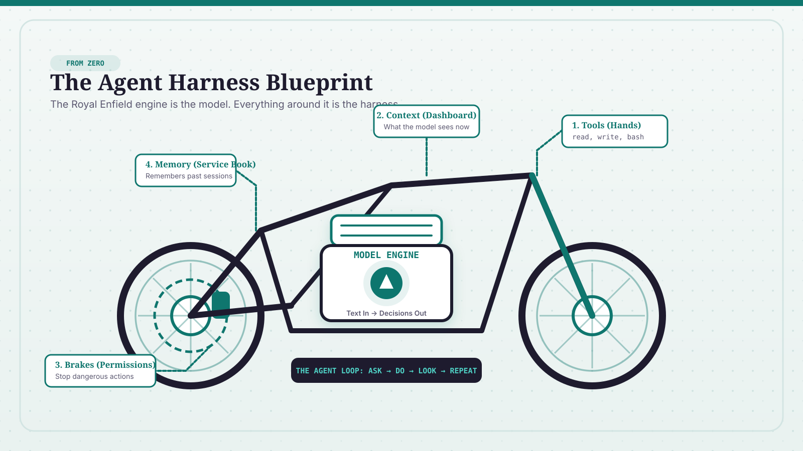
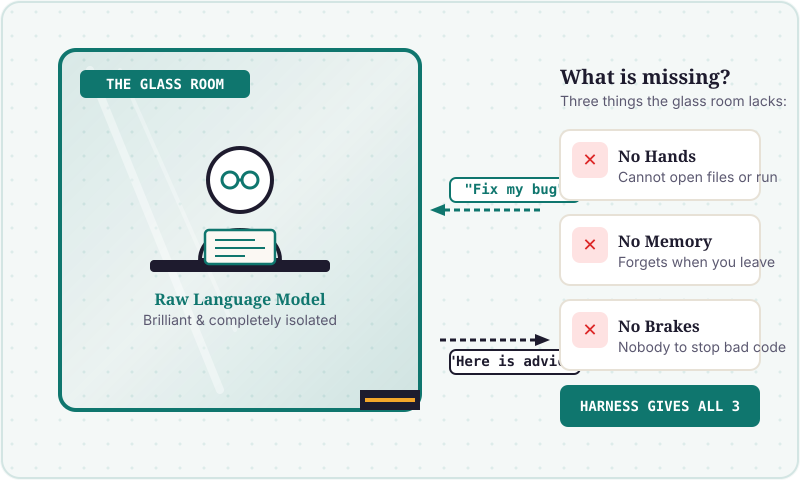
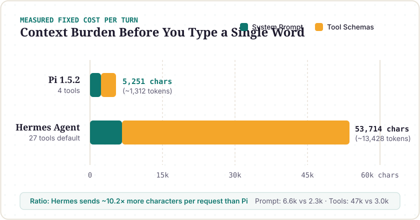

What Is a Harness? Pi vs Hermes
An engine lying on a workshop table cannot ride to Leh without handlebars, brakes and a frame. Learn how an agent harness gives raw text models hands, memory and brakes.

1. The Brilliant Person Behind the Glass
Imagine the cleverest engineer you know, locked inside a soundproof glass room with a notepad. You can slide notes under the door, and they slide notes back. They are brilliant. But they cannot see your computer, cannot open a single file, cannot run anything, and the moment you walk away they forget you ever came.
That is a language model on its own. Text goes in, text comes out. Nothing else.

Now say to it: “Fix the bug in my project.” What would that take? Three things the glass room cannot give:
- Hands: to open files, edit them, and run the test suite.
- A memory: to remember what you did yesterday or three turns ago.
- Brakes: somebody to inspect commands before they run and say “no, not that command.”
2. From Zero: An Engine Is Not a Motorcycle
A Royal Enfield engine lying on a workshop table cannot take you to Leh. It needs a frame, handlebars, brakes, a dashboard and a service book. The engine is the model. Everything else is the harness. Engine plus harness is a vehicle you can actually ride.
| Part of the Bike | What It Does | In the AI Harness |
|---|---|---|
| Handlebars | Lets you act on the road | Tools: read a file, edit code, run bash, search web |
| Dashboard | Shows what is happening right now | Context: everything the model can see this turn |
| Brakes | Stop you doing something dangerous | Permissions and sandbox: block reckless calls |
| Service book | Remembers history and maintenance | Memory and saved sessions: persistent knowledge |
| Engine cycle | Repeats strokes continuously | The loop: ask, do, look, repeat |
Here is the point to remember: swap the harness and the same model behaves like a completely different product. Claude Code, Codex, Pi and Hermes are different harnesses, and many of them can use the very same models.
Step 1 of 5
1. The Engine (The Model)
The language model sits at the center. It has raw intelligence, predicting next tokens, but cannot move anywhere on its own.
3. The Loop: Ask, Do, Look, Repeat
How does a harness actually execute? Think of a mechanic fixing a scooter. He looks, tries something, sees what happened, and decides his next move. He does not plan every turn in advance. A harness lets the model work in exactly that empirical rhythm:
- Ask: The model decides what to do next (“run the test suite”).
- Do: The harness actually executes the tool on your system.
- Look: The harness feeds the execution output back into the model's context.
- Repeat: The cycle continues until the model explicitly returns “done.”
Step 1 of 5
1. You State the Task
The human gives a goal: “Fix the bug in calc.py so test.py passes.”
3b. The Playable Mini-Harness
Here is the proof in action. Below is an interactive simulator running the exact state machine of our 50-line harness. No external API key is needed: the “model” is a scripted stand-in that replays a fixed plan. Everything touching the machine is the harness.
Agent Harness Sandbox
Notice The stand-in model is a scripted plan, not intelligent. The harness owns the loop, tools, and brakes.
Run it in Python • mini_harness.py (~50 lines)
import subprocess, pathlib, tempfile, os
# 1. TOOLS: what the model is allowed to do
def read(path): return pathlib.Path(path).read_text()
def write(path, text): pathlib.Path(path).write_text(text); return "written"
def bash(command):
r = subprocess.run(command, shell=True, capture_output=True, text=True, timeout=20)
return (r.stdout + r.stderr).strip() or "(no output)"
TOOLS = {"read": read, "write": write, "bash": bash}
# 2. BRAKE: a permission check that runs BEFORE any tool
def allowed(tool, args):
if tool == "bash" and "rm -rf" in args.get("command", ""):
return False
return True
# 3. THE LOOP
def run_agent(model, task, brake=True, max_turns=10):
messages = [{"role": "user", "content": task}] # the context
for turn in range(max_turns):
decision = model(messages) # model: text in -> action out
if "text" in decision: # model says done
print(f" turn {turn}: DONE -> {decision['text']}")
return messages
tool, args = decision["tool"], decision["args"]
if brake and not allowed(tool, args):
result = "BLOCKED by harness: this command needs human approval."
else:
result = TOOLS[tool](**args) # harness does it
print(f" turn {turn}: {tool}({args}) -> {result[:60]!r}")
messages.append({"role": "assistant", "content": decision})
messages.append({"role": "tool", "content": result}) # feed result back
return messages
# A scripted stand-in for the model (NOT intelligent)
def make_model(plan):
def model(messages):
step = sum(1 for m in messages if m["role"] == "tool")
return plan[step] if step < len(plan) else {"text": "finished"}
return model
d = tempfile.mkdtemp(); os.chdir(d)
pathlib.Path("calc.py").write_text("def average(n):\n return sum(n) / (len(n) + 1)\n")
pathlib.Path("test.py").write_text("from calc import average\nassert average([2,4,6]) == 4\nprint('PASS')\n")
print("RUN 1: fix a bug")
fix = [{"tool": "bash", "args": {"command": "python3 test.py"}},
{"tool": "write", "args": {"path": "calc.py", "text": "def average(n):\n return sum(n) / len(n)\n"}},
{"tool": "bash", "args": {"command": "python3 test.py"}}]
run_agent(make_model(fix), "make test.py pass")
print("\nRUN 2: a reckless model, brake OFF then ON")
bad = [{"tool": "bash", "args": {"command": "rm -rf precious"}}]
for brake in (False, True):
os.makedirs("precious", exist_ok=True); pathlib.Path("precious/data.txt").write_text("my thesis")
run_agent(make_model(bad), "tidy up", brake=brake)
print(" brake", "ON " if brake else "OFF", "-> precious folder exists?", os.path.exists("precious"))4. Why the Design Choices Matter
The execution loop is identical across agent frameworks. The critical differences lie in five architectural decisions. These are the five questions you should ask of any agent product:
- What goes into the system prompt? Every single turn, the model re-reads its entire context. Context is a budget: it costs tokens, it introduces latency, and an overly crowded prompt can distract the model from user instructions.
- Which tools, and how many? Every tool definition is serialized and sent on every single turn. More tools mean longer prompts, higher fixed costs, and more opportunities for the model to choose the wrong tool.
- What happens when the conversation gets too long? The standard solution is compaction: summarizing older exchanges, like writing revision notes before an exam.
- Does it remember across sessions? Think of a shift handover register in a hospital. Engineers at Anthropic describe long-running agents as shift workers who arrive with zero memory of the prior shift. Their fix is a progress log, a feature checklist, and the git history. A structured progress note is memory.
- Who approves a dangerous command? A human operator, a secondary evaluator model, an isolated sandbox, or nobody at all.
Pi and Hermes answer these five questions in completely opposite ways. That is the rest of our lesson.
5. Pi: The Mechanic's Toolbox
Pi was created by Mario Zechner. Written in TypeScript and MIT licensed, the repository is designed as a modular toolkit: a clean layer that connects to multiple model providers, an agent loop, a terminal CLI, and the coding agent itself. It can be used via terminal, one-shot mode, RPC, or directly imported via its SDK.
Its philosophy embodies the Indian concept of jugaad in the best engineering sense: equip the engineer with a lean, razor-sharp kit and let them assemble what they need. Mario argues that modern models already understand how to act as software engineers; they do not need an encyclopedia of system instructions. Pi hands the model just four tools: read, write, edit and bash. It intentionally excludes built-in sub-agents or rigid planning modes: if you want them, you add them as skills or extensions.
Pi's answers to the five questions:
- Prompt: Lean, featuring a concise tool list and minimal operational rules.
- Tools: Exactly 4 core tools (
read,write,edit,bash). - Long conversations: Compaction exists. Sessions are saved as branching JSON files on disk.
- Memory: Repository instruction files like
AGENTS.md, plus saved session trees. Skills load on demand. - Brakes: None built-in. Pi executes what the model asks, relying on you to run it inside a sandbox.
Run real Pi yourself • bash run_real_pi.sh (needs Node 20+ & Python 3)
#!/usr/bin/env bash
# Run the REAL Pi harness against a scripted stand-in "model" (no API key, no cost).
set -e
HERE="$(cd "$(dirname "$0")" && pwd)"
mkdir -p "$HERE/pi_demo/work" "$HERE/pi_demo/agent" && cd "$HERE/pi_demo"
[ -d node_modules/@earendil-works ] || npm install --ignore-scripts @earendil-works/pi-coding-agent
cp "$HERE/fake_model_server.py" .
cat > work/calc.py <<'PY'
def average(nums):
total = sum(nums)
return total / (len(nums) + 1)
PY
cat > work/test_calc.py <<'PY'
from calc import average
assert average([2, 4, 6]) == 4, f"expected 4, got {average([2,4,6])}"
print("PASS")
PY
cat > agent/models.json <<'JSON'
{ "providers": { "fake": { "baseUrl": "http://127.0.0.1:8765/v1", "api": "openai-completions",
"apiKey": "x", "models": [ { "id": "scripted" } ] } } }
JSON
echo "== BEFORE: the test fails =="; (cd work && python3 test_calc.py 2>&1 | tail -1 || true)
python3 fake_model_server.py & SERVER=$!; sleep 1
echo; echo "== Running the real Pi =="
( cd work && PI_CODING_AGENT_DIR="$HERE/pi_demo/agent" ../node_modules/.bin/pi \
--provider fake --model scripted --no-session -p "Fix the bug in calc.py so test_calc.py passes" )
kill $SERVER 2>/dev/null || true
echo; echo "== AFTER: calc.py was really edited =="; cat work/calc.py; (cd work && python3 test_calc.py)
echo; echo "== What Pi sent to the model =="; python3 "$HERE/measure_requests.py" requests.jsonl6. Hermes: The House-Help Who Learns Your Home
Hermes Agent comes from Nous Research. Written in Python and MIT licensed, it describes itself as the agent that grows with you. If Pi is the mechanic’s minimalist toolbox, Hermes is the trusted domestic helper who has lived with the family for years. In month one she asks how you take your morning chai; by month six, she already knows, and has written down exactly how your father likes the morning newspaper folded.
What Hermes builds around the language model:
- A comprehensive tool shelf: 40+ tools documented across toolsets: web, terminal, browser, media, memory, and scheduling. By default, 27 tools are loaded in the prompt.
- Persistent memory: Notes about user habits and prior tasks are injected into the system prompt on session start, complete with vector search across past sessions.
- Self-authored skills: After solving a difficult problem, Hermes can write the procedure into a reusable skill file. This “learning loop” updates the service register, leaving model weights untouched.
- Multi-channel reach: Direct integration with Telegram, Discord, Slack, WhatsApp, Signal, email, plus a background cron scheduler.
- Configurable brakes: Three permission approval tiers: manual confirmation, smart confirmation (evaluated by a secondary judge model), and off, with optional container isolation.
Measure Hermes yourself • bash run_hermes_measure.sh (needs Python 3.11+)
#!/usr/bin/env bash
# Measure what Hermes Agent sends to the model before you type anything.
set -e
HERE="$(cd "$(dirname "$0")" && pwd)"
mkdir -p "$HERE/hermes_demo/home" && cd "$HERE/hermes_demo"
[ -d venv ] || { python3 -m venv venv && ./venv/bin/pip install -q hermes-agent; }
cp "$HERE/hermes_log_server.py" .
export HERMES_HOME="$HERE/hermes_demo/home"
cat > "$HERMES_HOME/config.yaml" <<'YAML'
model:
default: scripted
provider: custom
base_url: http://127.0.0.1:8766/v1
api_key: x
YAML
python3 hermes_log_server.py & SERVER=$!; sleep 1
echo "== Asking Hermes to say ok (one-shot mode) =="
./venv/bin/hermes -z "say ok"
kill $SERVER 2>/dev/null || true
echo; echo "== What Hermes sent to the model =="; python3 "$HERE/measure_requests.py" hermes_requests.jsonl
echo; echo "== Hermes' own size report =="; ./venv/bin/hermes prompt-size 2>&1 | head -257. Pi and Hermes, Side by Side
Neither philosophy is inherently superior. They represent distinct engineering trades: an ultra-lean toolbox where you pay only for what you add, versus a rich, pre-configured assistant that arrives equipped for full autonomy.
The Minimalist Kit
- Core tools: 4 tools (read, write, edit, bash)
- Context burden: ~5.2k characters (~1.3k tokens)
- Memory: Session branches & AGENTS.md
- Permissions: None built-in; sandbox advised
- Extensibility: Skills loaded on-demand via jugaad
The Full Assistant
- Core tools: 27 default tools (40+ in docs)
- Context burden: ~53.7k characters (~13.4k tokens)
- Memory: Persistent vector notes & user model
- Permissions: Manual, judge model, or containers
- Extensibility: Self-improving learning loop

| Dimension | Pi | Hermes Agent |
|---|---|---|
| Guiding Idea | A minimal toolbox you shape yourself | A house-help that remembers and learns |
| Language & Licence | TypeScript • MIT | Python • MIT |
| Tools Visible to Model | 4 tools Measured | 27 default Measured • 40+ in docs |
| Fixed Overhead / Turn | ~5.2k characters Measured | ~54k characters Measured (~10.2×) |
| Memory Architecture | Branching session files, repository docs | Persistent vector memory, past-session search |
| Skill Expansion | Loaded strictly on demand | Written and refined by the agent |
| Interfaces & Channels | Terminal, RPC, SDK | Terminal, Telegram, Discord, Slack, WhatsApp, Signal, cron |
| Safety Brakes | None built-in; external sandbox recommended | Approval modes (manual/judge) & containers |
Under the hood: what do we mean by “minimal”?
“Minimal” refers strictly to what is presented to the model’s context, not the physical size of the source repository. The complete Pi monorepo spans hundreds of thousands of lines of TypeScript (handling multi-provider protocols, TUI rendering, RPC), though its core loop is under 3,000 lines. Hermes is a comprehensive Python framework exceeding one million lines. Both counts are approximate from local repository checkouts.
8. Where You Would Use Each
Choosing the right harness is just as consequential as selecting your underlying foundation model:
-
Choose Pi when you need to understand, restrict, and precisely govern your agent pipeline. Its compact architecture makes it ideal for learning runtime internals, building terminal developer workflows, embedding autonomous capabilities inside custom applications via its SDK, or locking down strict enterprise pipelines.
Concrete example: A university computer science lab runs an automated grading harness equipped exclusively with read-only file tools and a single grading script validator. -
Choose Hermes when you want an autonomous digital assistant that lives across multiple platforms and accumulates institutional context over time.
Concrete example: An independent designer in Mumbai configures Hermes on Telegram: “Every weekday at 8:00 AM, send me a briefing on pending invoices and client deliverables.” Hermes logs client milestones, generates custom parsing routines, and sends alerts over WhatsApp.
9. The Whole Thing in Plain Words
If a colleague asks you over dinner, “What is an AI agent harness?”, here is the five-point explanation:
- An AI model alone is a brilliant person behind soundproof glass: it accepts text notes and produces text notes, but possesses zero real-world hands.
- The harness is the surrounding machine: it provides hands (tools), a dashboard (context window), brakes (permission checks), and a service register (memory).
- It operates as an empirical loop: the model decides an action, the harness executes it in the physical environment, the output returns to context, and the loop repeats until finished.
- Pi is a minimalist toolbox: four tools, low fixed context (~5.2k chars), assembled through purposeful jugaad. Hermes is a complete domestic helper: 27+ tools, persistent memory, multi-channel messaging, and a ~54k character context overhead.
- The harness defines the product: the exact same foundation model plugged into two different harnesses produces two completely different systems.
10. Check Your Understanding
Test your grasp of harness design principles with these interactive disclosures.
Why can’t a language model alone fix a bug in your software repository?
The model is purely a text-in, text-out predictor. It has no operating system access to open files, edit code, execute tests, persist memory between invocations, or enforce security brakes. All of those physical capabilities are provided by the harness.
In our 50-line mini-harness, what prevented the deletion of the thesis folder?
A single conditional check in the harness (allowed()) running before tool execution. The stand-in model was equally reckless in both runs; safety was enforced entirely by the harness brake.
Why does the number of tools provided to an agent matter so much?
Every tool schema is serialized as JSON and re-transmitted on every single turn of the loop. More tools increase token costs, elevate latency, and broaden the attack surface for tool selection errors.
Why do long-running agent workflows require context compaction?
Because the conversation history expands by two messages every turn (the model's tool call and the environment's response). Without compaction or summarization, the request quickly breaches the model's finite context window limit.
Why was Hermes' measured fixed cost roughly ten times higher than Pi's?
Hermes transmits comprehensive system prompts (6,634 chars) and detailed schemas for 27 default tools (47,080 chars), totaling ~53.7k characters before user input. Pi sends a lean system prompt and only 4 tools (~5.2k chars).
What is the crucial lesson when testing autonomous agent safety brakes?
A brake that has not been tested in your specific runtime configuration is merely an assumption. As our one-shot test revealed, permissions configured for interactive prompts may fail to trigger in non-interactive batch modes.
11. Run It Yourself & References
All experiments in this lesson are completely reproducible on any standard developer workstation without commercial API credentials:
Terminal Commands • Local Verification
python3 mini_harness.py # Section 3: run the ~50-line harness & brake test
bash run_real_pi.sh # Section 5: installs Pi, fixes calc.py, measures prompt
bash run_hermes_measure.sh # Section 6: installs Hermes, captures fixed turn sizeWhat was checked and what was not:
- Checked: The Pi and Hermes source repositories, active tool definition dumps, Pi prompt and tool schemas in flight, Hermes initial one-shot transmission size, and the
rm -rfbrake test behavior in one-shot mode. - Not checked: Hermes interactive approval TUI dialogues, multi-turn task completion rates with frontier foundation models, or third-party claims in unverified external blog publications.
References & Further Reading:
- Pi Coding Agent: github.com/earendil-works/pi • pi.dev/docs/latest
- Hermes Agent: github.com/NousResearch/hermes-agent • hermes-agent.nousresearch.com/docs
- Mario Zechner, What I learned building an opinionated and minimal coding agent (mariozechner.at)
- Anthropic Engineering, Effective harnesses for long-running agents (The shift-worker paradigm and progress-file methodology)
- LangChain Research, The anatomy of an agent harness • Addy Osmani, Agent harness engineering